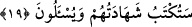

zînet ve nimet içinde yetişip büyümeyi terk etmek ve bundan sakınmak husûsuna açık
delâlet vardır. Çünkü Allah Teâlâ, bu durumu ayıp ve yerilme vesilesi saymış, ayrıca
bunu kadınların sıfatları olarak nitelemiştir. Peygamberimiz (s.a.)’in Muaz b. Cebel’e
hitâben şu sözü de bu husûsu teyid etmektedir: “Nimetlere dalıp zevk u safâ yapmaktan
sakın. Zîrâ Allah’ın sevgili kulları böyle nimetlere dalmamışlardır.”[151]
“Tene’um” yiyecek ve giyeceklerde lüks, leziz ve pahalı şeyleri kullanmaktır. Şâirin
ifâdesiyle:
Gıdâ ister latîf ve güzel olsun isterse olmasın,
Eğer ele geçirirsen âfiyetle yersin.
Şu sözler hikmetli sözlerdendir: En yumuşak yatakta uyu; yani iyice uyku galebe
çalınca uyu. En leziz yemeği ye; yani iyice açlık galebe çalınca ye. Bu asrın âlim ve
fakihlerine hayret ki ne hayret. Bu ve benzeri âyetleri tilâvet ederler, bu mânâdaki
hadis-i şerifleri okurlar da sonra sağlıklı bir şekilde düşünmezler. Zînet, süs ve lüksü
terk etmekte Peygamberimiz (s.a.) e ittiba etmezler.
Şâir şöyle nasihat eder:
Çocuklar gibi sarıya kırmızıya bakma,
Kadınlar gibi boya ve kokuyla dış görünüşünle mağrur olma.
Bazıları şöyle demiştir:
Kendini bahar gibi süsleme,
Böylece sende geleceğe dâir bir tama ve arzu olmasın.
Şuna da işâret vardır ki, süslenen erkek kadın hükmündedir. Akıllı kimse sıcak ve
soğuğu bertaraf edecek şeyle yetinip iç âlemini ve gönül dünyasını süsleyendir. Çünkü
gönül nazargâh-ı ilâhîdir. Şâyet kadınlarda üstün bir akıl; yani âhireti tercih eden akl-ı
meâd olsaydı elbette altın, gümüş, inci, ipek gibi zînet ve süslere meyletmezlerdi. Şu
beytin ifâde ettiği mânâ, erkek kadın herkese yeterli değil midir?
Ey elbiseye tapan! Kâbe’den daha şerefli değilsin ya!
Yılda bir defa eline geçen elbiseye kanâat et.
19. Onlar, Rahmân’ın kulları olan melekleri de dişi saydılar. Acaba meleklerin